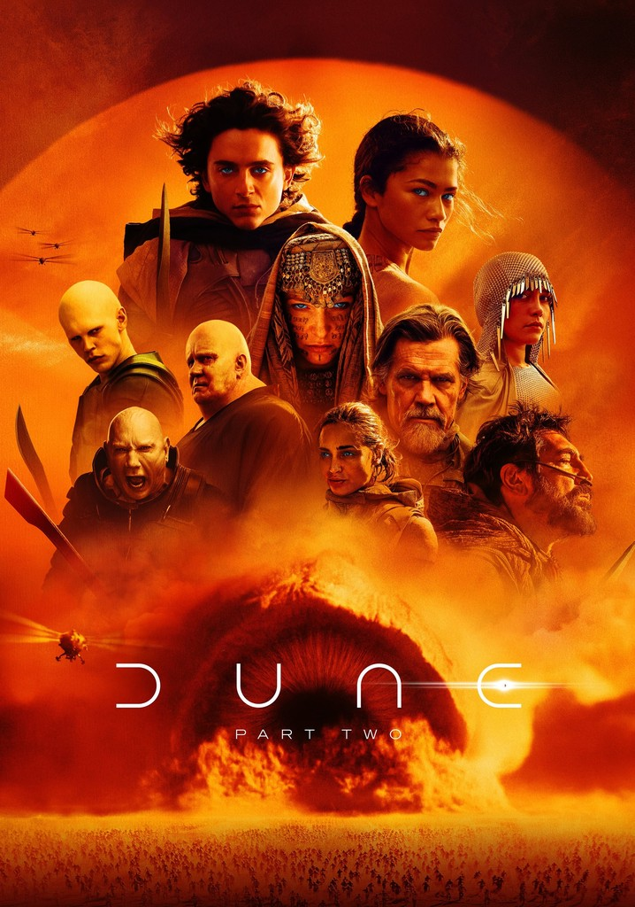

Dune: Part Two
Her şeyden önce şunu söylemeliyim ki Dune: Part Two, çok ihtişamlı ve görkemli bir film olmuş. Prodüksiyon kalitesi gerçekten muhteşem. Çekilen planlar, görsel efektler, fon müzikleri ve oyunculuklar kusursuza yakın. İç konuşmalara ve diyaloglara daha fazla yer ayırarak daha az bütçeyle çekilebilirdi ancak film bolca aksiyon sahnesi de barındırıyor. Peki Dune: Part Two diğer filmlerden sadece prodüksiyon kalitesiyle mi ayrılıyor? Bence hayır, İşlediği konunun ve onu işleyiş biçiminin kendine has bir yanı var.
Paul "Muad'dib" Atreides, ilk filmde toy ama eğitimli ve aristokrat bir delikanlı rolündeydi. Ayrıca genç yaşına rağmen bazı idealleri de vardı. Örnek vermek gerekirse; babasının Fremen politikasının karşısında, annesinin ve Bene Gesserit topluluğunun Fremen halkının beynini yıkamış olduğunu düşünmekteydi. Ancak ikinci filmde görüyoruz ki bu genç delikanlı Paul, yaşadığı travmaların da etkisiyle Mesih olma sürecine evriliyor ve artık yavaş yavaş bir anti-kahraman olma yoluna giriyor. Öyle ki kendisi bile getireceği yıkımdan korktuğu için gelecekte dönüşeceği kişiden korkuyor. İnsanların onun Lisan Al-Gaib olduğuna inanması ve Fremenlerden aldığı eğitim artık onu korkusuz bir savaşçıya ve cesur bir komutana dönüştürüyor. Geleceği önceden görmeye başlıyor ve alacağı kararların muhtemel etkilerinin ağırlığı altında ezilmemeye çalışıyor. Artık bir toy bir delikanlı değil, evrene mutlak olarak hakim olabilecek bir lider rolüne bürünüyor. Tabii ki bu durum onda bazı ruhsal bunalımlar da yol açıyor.
Bu noktada Chani karakteri de büyük önem kazanıyor çünkü kitaptakinden farklı bir rolde fremenlerin muhalif kanadının bir temsilcisi olarak görüyoruz. Kitaptaysa Chani, Paul Atreides'in neredeyse her kararına arka çıkan ve onu tartışmalı sayılabilecek kararlar da bile destekleyen kişi rolünde. Chani'ye verilen bu muhalif önder rolü, Paul'u sevmesiyle birlikte güçlü bir tezat ilişki oluşturuyor ve bence filmde de iyi kullanılmış. Bazen Chani'nin Paul'u ne kadar sevdiğini ve onu destekleyeceğini söylerken, sınırları aştığını düşündüğü zaman da en büyük muhalifi oluyor. Paul ise bu muhalifliğe karşı bir girişimde bulunmuyor çünkü kendisi de zaten dönüşebileceği kişiden korkuyor ancak bazı şeyleri yapmak konusunda da çaresiz olduğundan mecburen yapmak zorunda kalıyor.
Film ise kendine has karakteri burada kazanıyor. Birçok yapımcı, Paul Atreides ile Chani arasındaki aşk hikayesine odaklanarak hem bütçeden kısmayı hem de gişe gelirlerini arttırmayı düşünebilirdi. Ancak Denis Villeneuve, buradan sonraki hikayeyi daha çok Paul Atreides'ın içinde yaşadığı çatışmaya ve verdiği kararlarda yaşadığı ikilemlere odaklıyor. Paul Atreides'ın aldığı kararlar, yavaş yavaş evreni büyük bir savaşa (cihada) doğru sürüklerken ve muhtemelen yüz binlerce insanın ölümüne yol açacakken ona bu kararları aldırtan etkenlerin neler olduğunu görüyor ve aynı zamanda yaşıyoruz. Tabii ki sinematik olarak büyük savaş ve aksiyon sahneleri de bu deneyime önemli ölçüde katkı sağlıyor.
Timothée Chalamet ve Zendaya'nın performanslarına da değinmek gerekiyor. Özellikle Timothée Chalamet, altından kalkması gerçekten zor olan bir rolde iki filmde de büyük işler başardı. Birçok farklı ruh durumundan geçen Paul Atreides, böyle bir oyunculuk ile birleşmese gerçekten sıkıcı ve yapmacık bir film olabilirdi. Zendaya ise asi genç rolünü başarıyla yapmış ve mimikleriyle duyduğu nefret ve sınıf kinini iliklerimize kadar hissedebiliyoruz.
Filmden sevdiğim bazı replikler:
This prophecy is how they enslave us! (Chani)
I'm Paul Muad'dib Atreides, Duke of Arrakis! (Paul Atreides)
Long live the fighters! (Fremen dilinde Paul Atreides)
SILENCE! (Paul Atreides Reverend Mother'a)
Gallery

